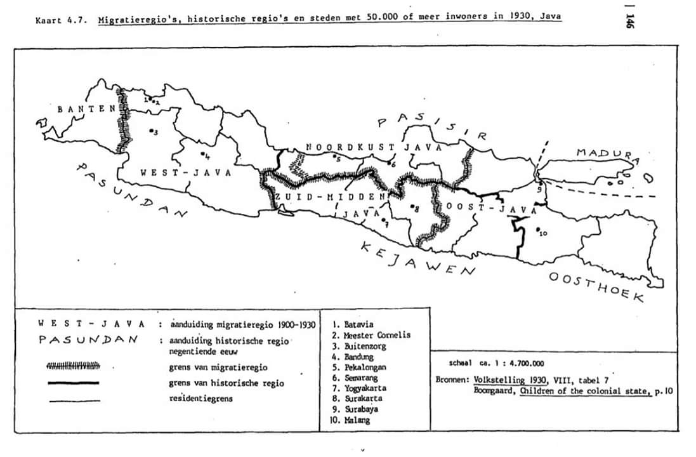

Jawa adalah sebuah pulau di Indonesia dan merupakan pulau terluas ke-13 di dunia. Dengan jumlah penduduk sekitar 150 juta, pulau ini pulau berpenduduk terbanyak di dunia dan merupakan salah satu tempat terpadat di dunia. Meskipun hanya menempati urutan terluas ke-5, Pulau Jawa dihuni oleh 60% penduduk Indonesia